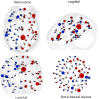
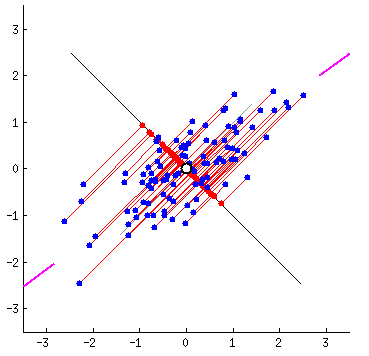

GLACIER: glass-box transformer
for interpretable dynamic neuroimaging


Multivariate Time Series
- Electrophysiological
- Geospatial
- Microphone arrays
- Internet of things
- Distributed sensing
- Health monitoring


To Understand, Learn to Predict

Graphs as Interpretable Representations
genetic network
networks of chess games
philosophy network
W3C specs
Titanic survival DT
Neural Net

Neuroimaging data
Brain as a network
- Voxels working together form networks

- dynamically change activity
- These networks interact and form ...
 more networks
capturing dynamics of the brain network
Problems with windowing
- Limiting data for estimation noisier estimates

- Fixed-shape soft windows: unclear what is important
- The same window shape for each time point
- The same window regardless the downstream task
-
Our solution: learn an adaptive window function
Two types of eXplainable AI
Explain the data

Interpret the model
Graph as a glass-box layer
- To see through a black box model we need a window

- Our window is a graph, but we want the model to use it too
- For that, the graph needs to be differentiable \[ \softmax(\bm{H}\bm{W}_Q\bm{W}_K\bm{H}^T), \bm{H}\mbox{ is (brain regions)} \times d \]
-
The now familiar
alignment matrix from the self-attention module
assembling a transparent model
Results: Interpretable glass-box layer for brains

Results: transparency improves model accuracy
Take home points
- Glass-box differentiable layer captures instantaneous dynamic connectivity
- Learning a graph across variables and importance of each time point simplifies model interpretation
- A model almost entirely made of self-attention is a highest accuracy model that is also fully interpretable